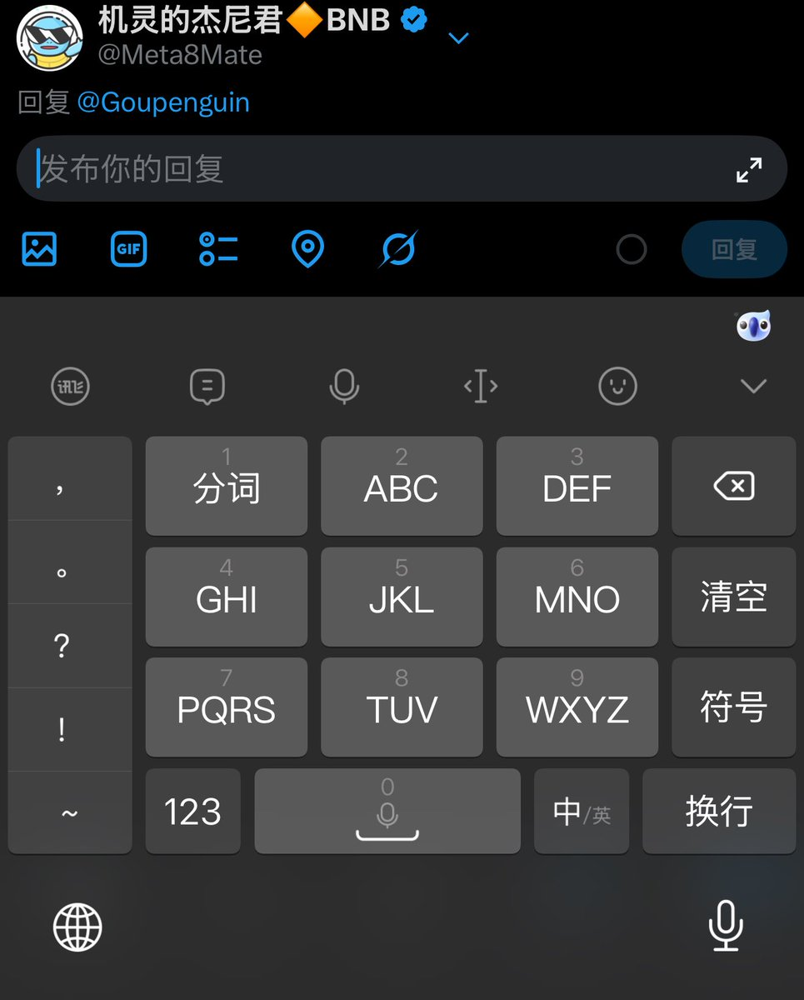

Aoi M
@aoim33
@Meta8Mate 从诺基亚时代开始养成的习惯就是九宫格
但是我现在是这样的
对于使用拉丁字母的语言，我用的是全键盘，比如英语法语
但是如果是东亚语言，中日韩语的话，我用的就是九宫格（日语假名，韩语天地人）

机灵的杰尼君🔶BNB
@Meta8Mate
突然发现一个问题，现在还有多少人会用九宫格输入法？是不是都在用全键盘？
上次遇到个零零后，他看到我的输入法很诧异的问：这是什么输入法？以为我是外国人…
记得以前上学的时候可以盲打九宫格，发短信和别人聊天。
完了，是不是暴露年龄了…🤣 https://t.co/7XI0VQ3XJJ